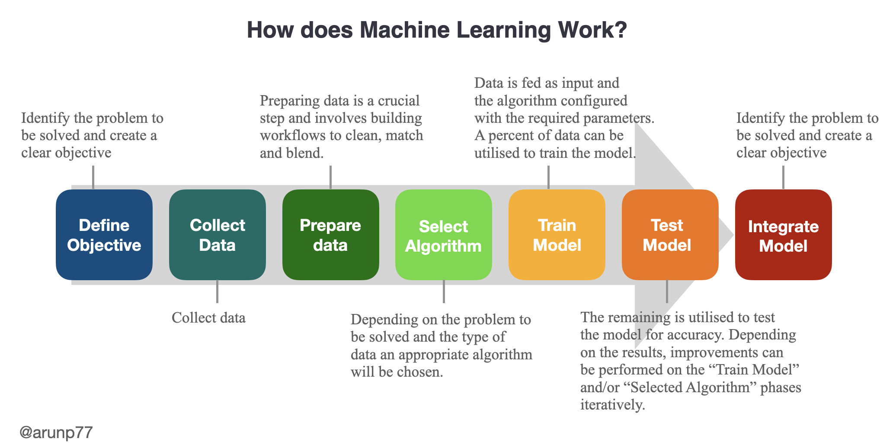
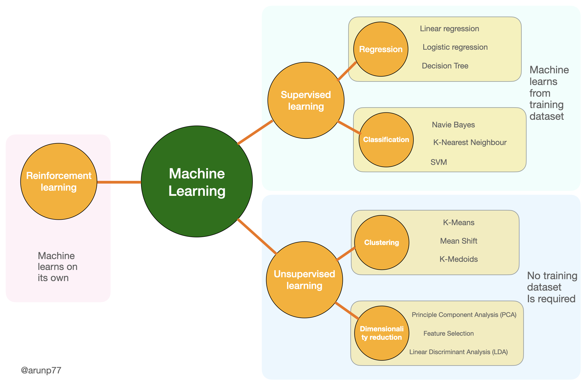

Analytics is a collection of techniques and tools used for creating value from data. Techniques include concepts such as artificial intelligence (AI), machine learning (ML), and deep learning (DL) algorithms.
Artificial Intelligence (AI):
AI is a broad field of computer science that aims to create intelligent machines capable of performing tasks that typically require human intelligence. It encompasses various techniques, algorithms, and approaches to mimic human cognitive abilities, such as learning, reasoning, problem-solving, perception, and natural language understanding. AI can be categorized into two types:
Narrow AI (or Weak AI): Narrow AI refers to AI systems designed to perform specific tasks or functions. These systems are highly specialized and excel at a particular domain, such as voice assistants, recommendation systems, or autonomous vehicles. Narrow AI does not possess general intelligence and is limited to the tasks it is trained or programmed for.
General AI (or Strong AI): General AI aims to develop machines that possess human-level intelligence and can understand, learn, and perform any intellectual task that a human can do. Achieving true general AI is still a subject of ongoing research and remains a significant challenge.
Machine Learning (ML):
Machine Learning is a subset of AI that focuses on developing algorithms and models that enable computers to learn and make predictions or decisions without explicit programming. ML algorithms learn from data and improve their performance through experience. They analyze patterns and relationships within the data to make predictions, classifications, or discover insights. ML can be further classified into several types:
Supervised Learning: In supervised learning, models are trained on labeled data, where each example has input features and corresponding target labels or outcomes. The model learns to generalize from the labeled data and make predictions on unseen data.
Unsupervised Learning: Unsupervised learning involves training models on unlabeled data, where the algorithm learns patterns and structures without explicit target labels. It focuses on finding hidden patterns, groupings, or generating meaningful representations of the data.
Semi-Supervised Learning: Semi-supervised learning combines elements of both supervised and unsupervised learning. It uses a small amount of labeled data along with a larger amount of unlabeled data to improve the model's performance.
Reinforcement Learning: Reinforcement learning involves an agent that learns to interact with an environment. The agent takes actions, receives feedback or rewards, and learns to maximize its cumulative reward over time.
Deep Learning and Neural Networks:
Deep learning is a subset of machine learning that focuses on artificial neural networks with multiple layers, enabling the model to learn hierarchical representations of data. These neural networks are composed of multiple layers of interconnected nodes, called neurons, that can learn hierarchical representations of the data. Deep learning algorithms excel at processing complex, high-dimensional data, such as images, speech, and text. DL has gained significant attention and success in recent years, achieving state-of-the-art performance in various domains, including computer vision, natural language processing, and speech recognition.
There are several categories or architectures within deep learning. Here are three prominent ones along with examples:
Convolutional Neural Networks (CNNs): CNNs are primarily used for image and video processing tasks. They excel at learning spatial hierarchies and capturing local patterns by applying convolutional layers that perform feature extraction and pooling layers that downsample the data. CNNs have achieved breakthrough performance in tasks like image classification, object detection, and image segmentation. An example is the famous image recognition model called "AlexNet," which won the ImageNet Large Scale Visual Recognition Challenge in 2012.
Recurrent Neural Networks (RNNs): RNNs are designed for sequential data and have internal memory to process information with temporal dependencies, making them suitable for tasks like speech recognition, language modeling, and machine translation. They have loops within their architecture, allowing information to persist and be passed from one step to another. An example is the "Long Short-Term Memory" (LSTM) network, which is capable of handling long-term dependencies and is widely used in natural language processing applications.
Generative Adversarial Networks (GANs): GANs consist of two neural networks—a generator and a discriminator—competing against each other. The generator network learns to create realistic data instances, such as images, while the discriminator network tries to distinguish between the generated data and real data. GANs are popular for generating synthetic data, image synthesis, image-to-image translation, and even creating deepfake videos. One notable example is the "Deepfake" technology, which uses GANs to manipulate and create realistic video content.
Key Differences Between Machine Learning And Deep Learning
Machine Learning
Deep Learning
Approach
Requires structured data
Does not require structured data
Human intervention
Requires human intervention for mistakes
Does not require human intervention for mistakes
Hardware
Can function on CPU
Requires GPU / Significant computing power
Time
Takes seconds to hours
Takes weeks
Uses
Forecasting, predicting and other simple applications
More complex applications like autonomous vehicles
What is Machine Learning?
A Machine Learning system learns from historical data, builds the prediction models, and whenever it receives new data, predicts the output for it. The accuracy of predicted output depends upon the amount of data, as the huge amount of data helps to build a better model which predicts the output more accurately.

A simplified diagram that demonstrates the functioning of machine learning (Image credit: @arunp77)
Categories of ML algorithms
Algorithms
Definition
Goal
Example
Supervised Learning
In supervised learning, the machine is trained on a labeled dataset, where the target variable (or output/dependent variable) is known for each observation in the dataset.
The goal of supervised learning is to learn a mapping from the input variables (or features) to the output variable, so that the machine can make accurate predictions on new, unseen data.
Linear Regression
Logistic Regression
Decision Trees
Neural Networks
Unsupervised Learning
In unsupervised learning, the machine is trained on an unlabeled dataset, where the target variable (or output) is not known for each observation in the dataset.
The goal of unsupervised learning is to learn patterns in the data, such as similarities or clusters, without a specific goal or target variable in mind.
In reinforcement learning, the machine learns by interacting with an environment, receiving feedback in the form of rewards or penalties for each action taken.
The goal of reinforcement learning is to learn an optimal policy, or set of actions, that maximize the cumulative reward over time.
Q-learning
SARSA
Deep Reinforcement Learning

Classification of machine learning Algorithms (Image credit: @arunp77)Classification of machine learning Algorithms (Image credit: @arunp77)
NOTE: Labeled data has both the input and output parameters in a completely machine-readable pattern, but requires a lot of human labor to label the data, to begin with. Unlabeled data only has one or none of the parameters in a machine-readable form. This negates the need for human labor but requires more complex solutions.
Use of the different algorithm
Use of machine learning Algorithms (Image credit: @arunp77)
Supervised Machine Learning:
Linear Regression, Logistic Regression and Support Vector Machines are used for regression tasks.
Supervised learning is the types of machine learning in which machines are trained using well "labelled" training data, and on basis of that data, machines predict the output. The labelled data means some input data is already tagged with the correct output.
Supervised learning is a process of providing input data as well as correct output data to the machine learning model. The aim of a supervised learning algorithm is to find a mapping function to map the input variable(x) with the output variable(y).
In the real-world, supervised learning can be used for Risk Assessment, Image classification, Fraud Detection, spam filtering, etc.
Example: Suppose you are building a spam email classifier that can automatically label incoming emails as spam or not spam. You would start by collecting a dataset of labeled emails, where each email is assigned a label of either "spam" or "not spam". You could then train a supervised learning algorithm, such as logistic regression or random forests, on this labeled dataset to learn a mapping function from the input email features (such as sender, subject, and body text) to the output label (spam or not spam). Once the model is trained, you can use it to predict the label of new, unseen emails.
Types of supervised Machine learning Algorithms:
Broadly we can classify machine learning Algorithms (Image credit: @arunp77)
How Supervised Learning Works? In supervised learning, models are trained using labelled dataset, where the model learns about each type of data. Once the training process is completed, the model is tested on the basis of test data (a subset of the training set), and then it predicts the output.
or more specific example:
Advantage and disadvantage of Supervised learning
Advantages
Disadvantages
Predictive Accuracy: Supervised learning algorithms can achieve high predictive accuracy when trained on labeled datasets, making them suitable for tasks where accurate predictions are crucial.
Dependency on Labeled Data: Requires a large amount of labeled training data, and obtaining such data can be time-consuming and expensive.
Clear Objective: The learning process has a clear objective – to map input features to the correct output based on labeled training data.
Not Suitable for Unstructured Data: Less effective for tasks involving unstructured data, where patterns are not easily discernible or require complex feature engineering.
Effective for Structured Data: Well-suited for structured data where relationships between input features and output are known or can be inferred.
Limited Generalization: The model may not generalize well to unseen data if the training dataset does not adequately represent the broader population or if the data distribution changes.
Widespread Applicability: Widely used in various real-world applications such as classification, regression, and ranking tasks, including spam detection, image recognition, and sentiment analysis.
Biased Predictions: Models can inherit biases present in the training data, leading to biased predictions, especially when the training data is not diverse or representative.
Interpretability: Models trained using supervised learning are often interpretable, allowing users to understand the reasoning behind predictions.
Model Complexity: Some supervised learning models, especially more complex ones, may be prone to overfitting, capturing noise in the training data and performing poorly on new, unseen data.
Human Intervention: Requires human expertise to label data accurately and select relevant features, which can be a bottleneck in certain domains.
Limited Understanding of Unseen Classes: In classification tasks, the model may struggle with classes not present or poorly represented in the training data.
unsupervised Machine Learning:
Unsupervised learning is another type of machine learning in which the computer is trained on unlabeled data, meaning the data does not have any pre-existing labels or targets.
The goal of unsupervised learning is to find hidden patterns or structure in the data without the guidance of a labeled dataset.
Example: Suppose you are working with a dataset of customer purchase histories for a retail store, and you want to identify groups or clusters of customers who have similar purchase patterns. Since the dataset does not have any pre-defined labels or categories, you would use an unsupervised learning algorithm, such as k-means clustering or hierarchical clustering, to group the customers based on their purchase histories. The algorithm would analyze the input features (such as purchase frequency, amount spent, and product categories) to discover patterns or similarities in the data, and then group the customers into different clusters based on these patterns. Once the clustering is complete, you can use it to identify different customer segments and tailor marketing strategies accordingly.
Types of Unsupervised Learning Algorithm: There are several types of unsupervised learning algorithms, each with their own unique approach to discovering patterns and structure in unlabeled data. Some of the most common types of unsupervised learning algorithms are:
Each of these unsupervised learning algorithms has its own strengths and weaknesses and can be applied to a wide range of tasks, including data clustering, outlier detection, feature engineering, and data visualization. The choice of algorithm will depend on the specific problem you are trying to solve and the characteristics of your data.
How Unsupervised Learning works? As the name suggests, unsupervised learning is a machine learning technique in which models are not supervised using training dataset. Instead, models itself find the hidden patterns and insights from the given data. It can be compared to learning which takes place in the human brain while learning new things. Unlike supervised learning, where the data is labeled with a target variable, unsupervised learning algorithms work on unlabeled data.
The goal of unsupervised learning is to find the underlying structure of dataset, group that data according to similarities, and represent that dataset in a compressed format.
Advantages & Disadvantages of Unsupervised Learning
Advantages
Disadvantages
Unsupervised learning is used for more complex tasks as compared to supervised learning because, in unsupervised learning, we don't have labeled input data.
Unsupervised learning is intrinsically more difficult than supervised learning as it does not have corresponding output.
Unsupervised learning is preferable as it is easy to get unlabeled data in comparison to labeled data.
The result of the unsupervised learning algorithm might be less accurate as input data is not labeled, and algorithms do not know the exact output in advance.
Reinforcement Learning
Reinforcement Learning (RL) is a type of machine learning algorithm that allows an agent to learn through trial and error by interacting with an environment.
The agent receives feedback in the form of rewards or penalties for the actions it takes in the environment. The goal of the agent is to learn a policy that maximizes the total reward it receives over time.
In RL, the agent learns by exploring the environment, taking actions, receiving rewards, and updating its policy based on the feedback it receives.
The agent’s policy is a mapping from states to actions that maximizes the expected future reward.
Examples:
Imagine you are training an agent to play a game of chess. The agent interacts with the game board and makes moves based on the current state of the game. The goal is for the agent to learn to make moves that lead to a win, while avoiding moves that lead to a loss.
In reinforcement learning, the agent receives a reward signal based on the outcome of each move it makes. For example, the agent might receive a positive reward for making a winning move, or a negative reward for making a losing move. The agent uses this feedback to adjust its strategy and make better moves in the future.
To train the agent, you would use a reinforcement learning algorithm such as Q-learning or policy gradient methods. These algorithms learn to optimize the agent's behavior by maximizing the expected cumulative reward over time. As the agent interacts with the game board and receives feedback, it gradually learns which moves are more likely to lead to a win and adjusts its strategy accordingly.
Over time, the agent should become better and better at playing chess, as it learns from its experiences and improves its decision-making. Reinforcement learning has been successfully applied to a wide range of problems, including robotics, game playing, and autonomous driving.
Components in RL
There are several components in RL:
The Environment: The environment is the external world with which the agent interacts. The agent receives observations of the environment, takes actions based on those observations, and receives rewards or penalties as feedback.
The Agent: The agent is the entity that interacts with the environment. It selects actions based on its current policy, which is updated based on the rewards it receives.
Reward Function: The reward function defines the goal of the agent. It maps states and actions to rewards or penalties. The agent tries to maximize the cumulative reward it receives over time.
Policy: The policy is the mapping from states to actions. The agent learns the policy through trial and error, and updates it based on the rewards it receives.
Value Function: The value function estimates the expected cumulative reward that the agent will receive if it follows a particular policy.
Difference between Supervised and Unsupervised Learning
Supervised Learning
Unsupervised Learning
Supervised learning algorithms are trained using labeled data.
Unsupervised learning algorithms are trained using unlabeled data.
Supervised learning model takes direct feedback to check if it is predicting the correct output or not.
Unsupervised learning model does not take any feedback.
Supervised learning model predicts the output.
Unsupervised learning model finds the hidden patterns in data.
In supervised learning, input data is provided to the model along with the output.
In unsupervised learning, only input data is provided to the model.
The goal of supervised learning is to train the model so that it can predict the output when given new data.
The goal of unsupervised learning is to find the hidden patterns and useful insights from the unknown dataset.
Supervised learning needs supervision to train the model.
Unsupervised learning does not need any supervision to train the model.
Supervised learning can be categorized in Classification and Regression problems.
Unsupervised Learning can be classified in Clustering and Associations problems.
Supervised learning can be used for those cases where we know the input as well as corresponding outputs.
Unsupervised learning can be used for those cases where we have only input data and no corresponding output data.
Supervised learning model produces an accurate result.
Unsupervised learning model may give a less accurate result as compared to supervised learning.
Supervised learning is not close to true Artificial Intelligence as in this, we first train the model for each data, and then only it can predict the correct output.
Unsupervised learning is more close to true Artificial Intelligence as it learns similarly as a child learns daily routine things by his experiences.
It includes various algorithms such as Linear Regression, Logistic Regression, Support Vector Machine, Multi-class Classification, Decision tree, Bayesian Logic, etc.
It includes various algorithms such as Clustering, KNN, and Apriori algorithm.
Machine learning life cycle
Machine learning life cycle is a cyclic process to build an efficient machine learning project. The main purpose of the life cycle is to find a solution to the problem or project. Machine learning life cycle involves seven major steps, which are given below:
Gathering Data: In this step, we need to identify the different data sources, as data can be collected from various sources such as files, database, internet, or mobile devices. This step includes the below tasks:
Identify various data sources
Collect data
Integrate the data obtained from different sources
Data preparation:
Data exploration: It is used to understand the nature of data that we have to work with. We need to understand the characteristics, format, and quality of data. A better understanding of data leads to an effective outcome. In this, we find Correlations, general trends, and outliers.
Data pre-processing: Now the next step is preprocessing of data for its analysis.
Data Wrangling:
Data wrangling is the process of cleaning and converting raw data into a useable format. It is not necessary that data we have collected is always of our use as some of the data may not be useful. In real-world applications, collected data may have various issues, including:
Missing Values
Duplicate data
Invalid data
Noise
So, we use various filtering techniques to clean the data.
Analyse Data:
Train the model: Now the next step is to train the model, in this step we train our model to improve its performance for better outcome of the problem. We use datasets to train the model using various machine learning algorithms. Training a model is required so that it can understand the various patterns, rules, and, features.
Test the model: Once our machine learning model has been trained on a given dataset, then we test the model. In this step, we check for the accuracy of our model by providing a test dataset to it. Testing the model determines the percentage accuracy of the model as per the requirement of project or problem.
Deployment: The last step of machine learning life cycle is deployment, where we deploy the model in the real-world system. If the above-prepared model is producing an accurate result as per our requirement with acceptable speed, then we deploy the model in the real system. But before deploying the project, we will check whether it is improving its performance using available data or not. The deployment phase is similar to making the final report for a project.